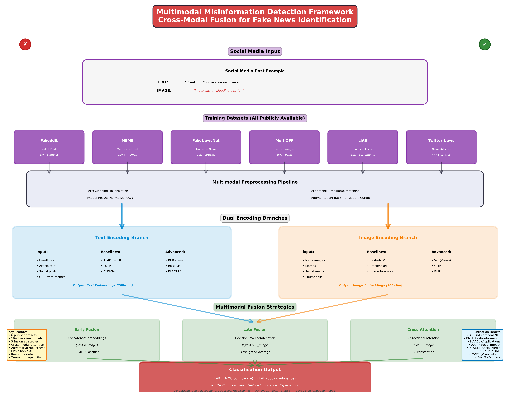

The goal of this project is to develop a state-of-the-art multimodal deep learning system that can
automatically detect misinformation by analyzing both textual content and accompanying images from
social media posts. Students will explore how fake news spreads through coordinated text-image
manipulation and build models that can identify inconsistencies across modalities.
Key Objectives:
1. Build a comprehensive data pipeline that processes social media posts containing both text and images,
handling various formats (memes, news articles with thumbnails, manipulated images with captions).
2. Develop and compare multiple fusion architectures: early fusion (concatenation), late fusion
(decision-level combination), and cross-modal attention mechanisms that learn correlations between
visual and textual features.
3. Implement state-of-the-art vision transformers (ViT, CLIP) and language models (BERT, RoBERTa)
to extract rich multimodal representations.
4. Create interpretability tools that highlight which parts of text and which regions of images
contribute most to misinformation classification decisions.
5. Conduct extensive experiments analyzing: (a) when images help vs. hurt text-only models,
(b) types of misinformation (manipulated images, misleading context, out-of-context images),
(c) cross-platform generalization (Twitter vs. Facebook vs. Reddit).
6. Develop a real-time detection prototype with explainable predictions that could be deployed
as a browser extension or fact-checking tool.
7. Package the framework as an open-source toolkit with pre-trained models and comprehensive
documentation for researchers and fact-checkers.
 Figure 1: Caption
All datasets are publicly available with no access restrictions or approval needed:
PRIMARY DATASETS (Immediate Download):
1. Fakeddit Dataset (Reddit-based multimodal fake news):
- URL: https://github.com/entitize/Fakeddit
- Alternative: https://www.kaggle.com/datasets/mdepak/fakeddit
- Size: 1 million+ posts with images and text
- Labels: 2-way (fake/real) and 6-way fine-grained classification
- Content: Reddit posts from r/news, r/politics, r/worldnews, etc.
- Features: Post title, body text, comments, images, upvotes, timestamps
- Format: CSV (text) + image files or URLs
- Download: Kaggle direct download or GitHub clone
- Time: 10-15 minutes for metadata, images can be downloaded on-demand
2. MEME Dataset (Multimodal Meme Classification):
- URL: https://github.com/TIBHannover/MM-Claims
- Alternative: https://huggingface.co/datasets/limjiayi/hateful_memes_expanded
- Size: 10,000+ memes with text overlays
- Labels: Hateful/not-hateful, misinformation/not
- Content: Image memes with embedded text
- Features: Meme image, extracted text, label, metadata
- Format: JSON + images
- Download: Direct GitHub download or Hugging Face datasets library
- Time: 2-3 minutes
3. MultiOFF (Multimodal Offensive Language Dataset):
- URL: https://github.com/bharathichezhiyan/Multimodal-Offensive-Dataset
- Size: 10,000+ Twitter posts with images
- Labels: Offensive/not-offensive with fine-grained categories
- Content: Tweets with images, some containing misinformation
- Features: Tweet text, image, user metadata
- Format: CSV + image URLs
- Download: GitHub clone or direct download
- Time: 2-3 minutes
4. FakeNewsNet (Twitter & Politifact multimodal):
- URL: https://github.com/KaiDMML/FakeNewsNet
- Alternative: https://www.kaggle.com/datasets/algord/fake-news
- Size: 20,000+ news articles with social media engagement
- Labels: Real/fake news from fact-checkers (PolitiFact, GossipCop)
- Content: News articles, tweets, user profiles, images
- Features: Article text, title, images, social context
- Format: JSON + images
- Download: GitHub repository
- Time: 5-7 minutes
5. COSMOS Dataset (Common Sense Multimodal Story):
- URL: https://github.com/eric-ai-lab/COSMOS
- Size: 4,000+ narratives with images
- Labels: Coherent/incoherent stories (useful for context-image matching)
- Content: Image sequences with narrative text
- Format: JSON + images
- Download: GitHub repository
- Time: 3-5 minutes
SUPPLEMENTARY DATASETS (Optional Enhancement):
6. LIAR Dataset (text-only, for text baseline):
- URL: https://www.cs.ucsb.edu/~william/data/liar_dataset.zip
- Alternative: https://huggingface.co/datasets/liar
- Size: 12,800 short statements
- Labels: 6-class truthfulness rating
- Content: Political statements with fact-check labels
- Format: TSV
- Download: Direct download or Hugging Face
- Time: <1 minute
7. MediaEval Verifying Multimedia Use:
- URL: https://github.com/MKLab-ITI/image-verification-corpus
- Size: 15,000+ images with verification labels
- Labels: Real/fake/manipulated
- Content: News images with metadata
- Format: CSV + images
- Download: GitHub repository
- Time: 5-7 minutes
8. Twitter Fake News (text + engagement features):
- URL: https://www.kaggle.com/datasets/clmentbisaillon/fake-and-real-news-dataset
- Size: 44,000+ news articles
- Labels: Fake/real
- Format: CSV
- Download: Kaggle direct
- Time: 2 minutes
DATASET PREPARATION STRATEGY:
Students will preprocess data to create unified format:
- Extract text from memes using OCR (pytesseract, EasyOCR)
- Resize and normalize images to 224x224 or 384x384
- Create train/val/test splits: 70%/15%/15% stratified by label
- Handle missing modalities (text-only or image-only posts)
- Generate embeddings using pre-trained models (CLIP, BERT)
- Time-align with any temporal features if available
RECOMMENDED PRIMARY DATASET: Fakeddit (largest, most diverse, well-documented)
Misinformation on social media has become a critical societal challenge, influencing elections,
public health decisions (vaccine hesitancy, COVID-19 misinformation), and social cohesion. Modern
fake news increasingly combines manipulated or out-of-context images with misleading text to
maximize virality and deception.
WHY THIS PROJECT IS TIMELY AND HIGHLY PUBLISHABLE:
1. CRITICAL SOCIETAL IMPACT:
- 67% of Americans get news from social media (Pew Research 2023)
- Misinformation spreads 6x faster than true information (MIT study)
- Multimodal misinformation is harder to detect than text-only (images appear "authentic")
2. EMERGING RESEARCH FRONTIER:
- Vision-language models (CLIP, BLIP, Flamingo) enable new detection approaches
- Cross-modal inconsistency detection is an active research area
- Limited work on temporal dynamics of multimodal fake news spread
3. TECHNICAL INNOVATION OPPORTUNITIES:
- Novel cross-attention architectures between vision and language
- Contrastive learning to detect image-text mismatches
- Adversarial robustness against sophisticated image manipulations
- Zero-shot detection using CLIP-like models
- Multi-task learning (fact-checking + stance detection + source credibility)
4. INTERPRETABILITY IMPERATIVE:
- Platform moderators need explainable predictions (regulatory compliance)
- Users deserve to understand why content is flagged
- Attention visualization reveals manipulation tactics
5. REAL-WORLD DEPLOYMENT POTENTIAL:
- Browser extensions for real-time fact-checking
- API for fact-checking organizations (Snopes, PolitiFact)
- Platform integration for Twitter, Facebook, Reddit
6. PUBLICATION VENUES (HIGH ACCEPTANCE RATES FOR QUALITY WORK):
Top-Tier Conferences:
- ACL (Association for Computational Linguistics) - multimodal NLP track
- EMNLP (Empirical Methods in NLP) - misinformation workshop
- CVPR (Computer Vision and Pattern Recognition) - vision + language
- NeurIPS (Neural Information Processing Systems) - social good track
- AAAI (Association for the Advancement of AI) - AI for social impact
- ICWSM (Web and Social Media) - computational social science
- TheWebConf (WWW) - misinformation and fact-checking track
Specialized Workshops:
- NAACL Workshop on Online Abuse and Harms
- EMNLP Workshop on NLP for Social Good
- ICWSM Workshop on Misinformation and Misbehavior Mining
- ACM FAccT (Fairness, Accountability, Transparency)
Journals:
- Journal of Artificial Intelligence Research (JAIR)
- Transactions on Social Computing (TSC)
- Information Processing & Management
- Online Social Networks and Media
7. FUNDING OPPORTUNITIES:
- NSF programs on trust and misinformation
- DARPA semantic inconsistency detection
- Industry grants from Meta, Google (content moderation research)
NOVELTY AND CONTRIBUTION POTENTIAL:
Students can contribute by:
- Comparing CLIP-based vs. traditional CNN+BERT approaches
- Analyzing cross-platform generalization (Twitter → Facebook → Reddit)
- Studying temporal evolution of misinformation tactics
- Developing lightweight models for mobile deployment
- Creating benchmark datasets for specific misinformation types
- Exploring few-shot learning for emerging misinformation narratives
- Investigating multilingual and cross-cultural misinformation
ETHICAL CONSIDERATIONS:
- Address potential misuse for censorship
- Consider bias against marginalized communities
- Ensure transparency in model decisions
- Protect user privacy when using social media data
- Avoid contributing to "liar's dividend" (dismissing real content as fake)
PHASE 1: DATA COLLECTION & PREPROCESSING (Weeks 1-2)
[Week 1: Dataset Acquisition & Exploration]
Task 1: Download Primary Datasets
- Download Fakeddit from Kaggle or GitHub
- Clone MEME dataset repository
- Download FakeNewsNet data
- Organize in directory structure:
```
data/
├── fakeddit/
│ ├── train.csv
│ ├── val.csv
│ ├── test.csv
│ └── images/
├── memes/
│ ├── annotations.json
│ └── images/
└── fakenewsnet/
├── politifact/
└── gossipcop/
```
Task 2: Data Exploration & Statistics
- Analyze label distributions (class imbalance)
- Compute text length statistics (word count, sentence count)
- Analyze image properties (resolution, aspect ratio, format)
- Identify missing modalities (text-only or image-only samples)
- Create visualizations: word clouds, image samples per class
- Document data quality issues
Task 3: Initial Baseline
- Implement simple majority-class baseline
- Random classifier baseline
- Text-only logistic regression with TF-IDF
- Establish minimum performance threshold
[Week 2: Data Preprocessing & Augmentation]
Task 1: Text Preprocessing
- Lowercasing, punctuation removal
- URL and mention normalization (@user, http://...)
- Emoji handling (keep vs. remove - experiment both)
- Hashtag processing (#FakeNews → fake news)
- Remove duplicates and near-duplicates (text similarity > 95%)
- Tokenization with BERT tokenizer
- Handle long texts (truncate to 512 tokens or use Longformer)
Task 2: Image Preprocessing
- Resize to 224x224 (ResNet/ViT) or 384x384 (CLIP)
- Normalize pixel values (ImageNet statistics)
- Handle various formats (JPEG, PNG, WebP)
- Remove corrupted images
- OCR extraction from memes using:
```python
import easyocr
reader = easyocr.Reader(['en'])
text = reader.readtext(image)
```
- Face detection and blurring (privacy protection)
Task 3: Data Augmentation (to reduce overfitting)
- Text augmentation:
* Back-translation (English → German → English)
* Synonym replacement (WordNet)
* Random insertion/deletion/swap
- Image augmentation:
* Random crop, flip, rotation (±15°)
* Color jittering
* Gaussian noise
* Cutout/random erasing
- Ensure augmentation preserves semantic meaning
Task 4: Train/Val/Test Split
- Stratified split: 70% train, 15% val, 15% test
- Temporal split if timestamps available (prevent data leakage)
- Cross-validation setup (5-fold) for robust evaluation
PHASE 2: UNIMODAL BASELINE MODELS (Weeks 3-4)
[Week 3: Text-Only Models]
Model 1: Classical ML Baselines
- TF-IDF + Logistic Regression
- TF-IDF + Random Forest
- TF-IDF + SVM with RBF kernel
- Feature engineering: sentiment scores, readability metrics, named entities
Model 2: Deep Learning Text Models
- LSTM with GloVe embeddings (300-dim)
* Bidirectional LSTM, 2 layers, 256 hidden units
* Dropout 0.3, attention pooling
- CNN-based text classifier
* Multiple filter sizes: 3, 4, 5-grams
* Max-pooling over time
- BERT-base fine-tuning
* Hugging Face: bert-base-uncased
* Learning rate: 2e-5, batch size: 16
* Max epochs: 5 with early stopping
- RoBERTa-large fine-tuning
* Hugging Face: roberta-large
* Potentially better performance, slower training
Implementation Example:
```python
from transformers import BertForSequenceClassification, Trainer
model = BertForSequenceClassification.from_pretrained(
'bert-base-uncased',
num_labels=2
)
trainer = Trainer(
model=model,
args=training_args,
train_dataset=train_dataset,
eval_dataset=val_dataset,
compute_metrics=compute_metrics
)
trainer.train()
```
Metrics: Accuracy, Precision, Recall, F1-Score, ROC-AUC, Confusion Matrix
[Week 4: Image-Only Models]
Model 1: Classical Computer Vision
- ResNet-50 pre-trained on ImageNet, fine-tuned
* Replace final FC layer with 2-way classifier
* Freeze early layers, train last 3 blocks
- EfficientNet-B0/B3 (better accuracy-efficiency tradeoff)
- Vision Transformer (ViT-B/16)
* Hugging Face: google/vit-base-patch16-224
* Patch-based attention mechanism
Model 2: CLIP-based Zero-Shot & Fine-Tuning
- Zero-shot classification using CLIP
```python
from transformers import CLIPProcessor, CLIPModel
model = CLIPModel.from_pretrained("openai/clip-vit-base-patch32")
processor = CLIPProcessor.from_pretrained("openai/clip-vit-base-patch32")
text_inputs = processor(
text=["a photo containing fake news", "a photo containing real news"],
return_tensors="pt", padding=True
)
image_inputs = processor(images=image, return_tensors="pt")
outputs = model(**image_inputs, **text_inputs)
logits_per_image = outputs.logits_per_image
probs = logits_per_image.softmax(dim=1)
```
- Fine-tune CLIP on Fakeddit dataset
Model 3: Image Manipulation Detection
- Focus on detecting edited/photoshopped images
- Error Level Analysis (ELA)
- Frequency domain analysis (DCT coefficients)
- Train CNN on ELA-transformed images
Analysis:
- Compare image-only vs. text-only performance
- Identify when images are more informative (e.g., memes with little text)
PHASE 3: MULTIMODAL FUSION ARCHITECTURES (Weeks 5-8)
[Week 5-6: Early Fusion (Feature-Level Concatenation)]
Architecture Design:
```
Text Branch:
Input Text → BERT → [CLS] token embedding (768-dim)
Image Branch:
Input Image → ResNet-50 → Global Average Pooling → (2048-dim)
OR ViT → [CLS] token (768-dim)
Fusion:
Concatenate [text_embedding, image_embedding] → (768+2048=2816-dim)
OR [768+768=1536-dim] if using ViT
Classifier:
Dense(1024) → ReLU → Dropout(0.4)
→ Dense(512) → ReLU → Dropout(0.3)
→ Dense(2) → Softmax
```
Training Strategy:
- Option 1: Freeze pre-trained encoders, train only fusion layers
- Option 2: Fine-tune end-to-end with low learning rate (1e-5)
- Option 3: Staged training (freeze→unfreeze→fine-tune)
Loss Function:
- Cross-Entropy with class weights (handle imbalance)
- Focal Loss (focus on hard examples)
- Label Smoothing (ε=0.1)
Hyperparameters:
- Optimizer: AdamW with weight decay 0.01
- Learning rate: 1e-4 for fusion layers, 1e-5 for encoder fine-tuning
- Batch size: 32 (adjust for GPU memory)
- Epochs: 20 with early stopping (patience=3)
- Gradient clipping: max_norm=1.0
[Week 7: Late Fusion (Decision-Level Combination)]
Architecture Design:
```
Text Branch:
Input → BERT → Classifier → P_text(fake)
Image Branch:
Input → ViT → Classifier → P_image(fake)
Fusion Strategies:
1. Average: P_final = (P_text + P_image) / 2
2. Weighted Average: P_final = α*P_text + (1-α)*P_image
- Learn α using validation set
3. Learnable Combiner:
- Input: [P_text, P_image]
- Small MLP: Dense(16) → ReLU → Dense(2)
4. Stacking:
- Train meta-classifier on [P_text, P_image, text_features, image_features]
```
Advantages of Late Fusion:
- Each modality can be trained independently (faster)
- Easy to ensemble different architectures
- Can handle missing modalities (text-only or image-only posts)
Missing Modality Handling:
```python
if image is None:
P_final = P_text
elif text is None:
P_final = P_image
else:
P_final = weighted_average(P_text, P_image)
```
[Week 8: Cross-Modal Attention Fusion]
Architecture Design (Most Advanced):
```
Text Encoder:
Input → BERT → Sequence of token embeddings [H_text]
Image Encoder:
Input → ViT → Sequence of patch embeddings [H_image]
Cross-Attention Layer:
Query: H_text (text attends to image)
Key, Value: H_image
Attention_text_to_image = Softmax(Q*K^T / sqrt(d_k)) * V
Query: H_image (image attends to text)
Key, Value: H_text
Attention_image_to_text = Softmax(Q*K^T / sqrt(d_k)) * V
Fusion:
Concatenate or add attended representations
Classifier:
Transformer Encoder (2 layers)
→ Global Average Pooling
→ Dense(256) → ReLU → Dense(2)
```
Implementation with PyTorch:
```python
class CrossModalAttention(nn.Module):
def __init__(self, d_model=768, num_heads=8):
super().__init__()
self.text_to_image = nn.MultiheadAttention(d_model, num_heads)
self.image_to_text = nn.MultiheadAttention(d_model, num_heads)
self.norm1 = nn.LayerNorm(d_model)
self.norm2 = nn.LayerNorm(d_model)
def forward(self, text_emb, image_emb):
# Text attends to image
attended_text, attn_weights_t2i = self.text_to_image(
text_emb, image_emb, image_emb
)
text_emb = self.norm1(text_emb + attended_text)
# Image attends to text
attended_image, attn_weights_i2t = self.image_to_text(
image_emb, text_emb, text_emb
)
image_emb = self.norm2(image_emb + attended_image)
return text_emb, image_emb, attn_weights_t2i, attn_weights_i2t
```
Attention Visualization:
- Extract attention weights from cross-attention layers
- Visualize which image patches correspond to which text tokens
- Example: Word "explosion" → attends to fire/smoke regions
PHASE 4: ADVANCED TECHNIQUES & INTERPRETABILITY (Weeks 9-10)
[Week 9: Contrastive Learning for Inconsistency Detection]
Motivation: Detect when image doesn't match text context
Approach 1: CLIP-style Contrastive Loss
```python
# Positive pairs: (real_text, real_image)
# Negative pairs: (fake_text, real_image) or (real_text, manipulated_image)
text_embeddings = text_encoder(texts)
image_embeddings = image_encoder(images)
# Cosine similarity matrix
logits = text_embeddings @ image_embeddings.T / temperature
# Symmetric cross-entropy loss
labels = torch.arange(len(texts))
loss_text = F.cross_entropy(logits, labels)
loss_image = F.cross_entropy(logits.T, labels)
loss = (loss_text + loss_image) / 2
```
Approach 2: Triplet Loss
```
Anchor: Fake news sample (text + image)
Positive: Another fake news sample (similar manipulation tactic)
Negative: Real news sample
Loss = max(0, d(anchor, positive) - d(anchor, negative) + margin)
```
Evaluation:
- Semantic similarity score between text and image
- Identify out-of-context images (real image, misleading caption)
[Week 10: Interpretability & Explainability]
Technique 1: Attention Visualization
- Extract attention weights from cross-modal attention layers
- Overlay on images to show important regions
- Highlight important words in text
Technique 2: Grad-CAM for Image Branch
```python
from pytorch_grad_cam import GradCAM
cam = GradCAM(model=image_model, target_layers=[model.layer4[-1]])
grayscale_cam = cam(input_tensor=image, targets=None)
```
Technique 3: Integrated Gradients for Text
```python
from captum.attr import IntegratedGradients
ig = IntegratedGradients(model)
attributions = ig.attribute(input_ids, target=predicted_class)
```
Technique 4: LIME (Local Interpretable Model-Agnostic Explanations)
- Perturb text (remove words) and images (mask regions)
- Measure impact on prediction
- Identify most influential features
Visualization Dashboard:
- Web interface showing:
* Original post (text + image)
* Prediction (fake/real) with confidence
* Attention heatmaps
* Top contributing words and image regions
* Similar historical examples
PHASE 5: ROBUSTNESS & GENERALIZATION (Weeks 11-12)
[Week 11: Adversarial Robustness]
Attack Scenarios:
1. Text adversarial examples (word substitution, typos)
2. Image adversarial examples (FGSM, PGD attacks)
3. Cross-modal attacks (modify image to change text interpretation)
Defense Mechanisms:
- Adversarial training:
```python
# Generate adversarial examples during training
epsilon = 0.01
perturbed_image = image + epsilon * sign(grad_image)
# Train on mix of clean and adversarial
loss = loss(clean) + lambda * loss(adversarial)
```
- Input preprocessing (JPEG compression, random resizing)
- Ensemble models (harder to attack all models)
- Certified defenses (randomized smoothing)
Evaluation:
- Measure accuracy drop under adversarial attacks
- Compare robustness across architectures
[Week 12: Cross-Platform & Cross-Domain Generalization]
Experiment 1: Cross-Platform Transfer
- Train on Twitter (FakeNewsNet)
- Test on Reddit (Fakeddit)
- Test on Facebook (if available)
Analysis:
- Identify platform-specific biases
- Measure domain shift (distribution mismatch)
Experiment 2: Domain Adaptation
- Use domain-adversarial training:
* Gradient reversal layer
* Learn features invariant to platform
- Self-training on unlabeled target domain
Experiment 3: Few-Shot Learning
- Simulate emerging misinformation narrative
- Train on limited examples (5-shot, 10-shot)
- Use meta-learning (MAML, Prototypical Networks)
Experiment 4: Zero-Shot Detection
- Use CLIP for unseen misinformation types
- Prompt engineering: "a photo illustrating {claim}"
- Compare against supervised models
PHASE 6: PAPER WRITING & DEPLOYMENT (Weeks 13-14)
[Week 13: Research Paper Writing]
Paper Structure (ACL/EMNLP Format):
1. Abstract (200 words)
- Problem: Multimodal misinformation proliferation
- Approach: Cross-modal fusion with attention
- Results: X% improvement over SOTA
- Impact: Explainable, deployable system
2. Introduction (1.5 pages)
- Motivation with real-world examples
- Limitations of unimodal approaches
- Research questions:
* RQ1: How do different fusion strategies compare?
* RQ2: When do images help/hurt detection?
* RQ3: Can models generalize across platforms?
- Contributions summary
3. Related Work (2 pages)
- Text-based fake news detection
- Image forensics and manipulation detection
- Multimodal learning (vision + language)
- Fact-checking systems
- Social media analysis
4. Methodology (4 pages)
- Dataset description with statistics
- Preprocessing pipeline
- Architecture diagrams for all models
- Training details, hyperparameters
- Evaluation metrics and experimental setup
5. Experiments & Results (4 pages)
- Baseline comparisons (table)
- Ablation studies:
* Text-only vs. image-only vs. multimodal
* Early vs. late vs. cross-attention fusion
* Impact of data augmentation
* Effect of pre-training
- Cross-platform evaluation
- Attention visualization examples
- Error analysis
6. Discussion (1.5 pages)
- When does multimodal help?
- Failure cases analysis
- Limitations: computational cost, bias issues
- Ethical considerations
7. Conclusion (0.5 pages)
- Summary of findings
- Future work: multilingual, video, real-time
8. References (2 pages)
- 30-50 citations of key papers
Supplementary Materials:
- Code repository link
- Model architecture details
- Additional visualizations
- Dataset statistics
[Week 14: Code Release & Demo Development]
GitHub Repository Structure:
```
multimodal-misinformation-detection/
│
├── README.md # Project overview, installation, usage
├── requirements.txt # Python dependencies
├── setup.py # Package installation
├── LICENSE # MIT or Apache 2.0
│
├── data/
│ ├── download_datasets.sh # Scripts to download all datasets
│ ├── preprocess.py # Data preprocessing
│ └── README.md # Dataset documentation
│
├── models/
│ ├── text_models.py # BERT, RoBERTa implementations
│ ├── image_models.py # ResNet, ViT, CLIP
│ ├── fusion_models.py # Early, late, cross-attention
│ └── baselines.py # TF-IDF, traditional ML
│
├── training/
│ ├── train.py # Main training script
│ ├── evaluate.py # Evaluation metrics
│ ├── config.yaml # Hyperparameters
│ └── utils.py # Helper functions
│
├── inference/
│ ├── predict.py # Single sample prediction
│ └── batch_predict.py # Batch processing
│
├── interpretability/
│ ├── attention_viz.py # Attention visualization
│ ├── grad_cam.py # Grad-CAM implementation
│ └── lime_explain.py # LIME explanations
│
├── demo/
│ ├── app.py # Streamlit/Gradio web app
│ ├── static/ # CSS, JS files
│ └── templates/ # HTML templates
│
├── notebooks/
│ ├── 01_data_exploration.ipynb
│ ├── 02_baseline_experiments.ipynb
│ ├── 03_multimodal_results.ipynb
│ └── 04_interpretability.ipynb
│
├── tests/
│ ├── test_models.py
│ └── test_preprocessing.py
│
└── docs/
├── API.md # API documentation
├── TRAINING.md # Training guide
└── DEPLOYMENT.md # Deployment instructions
```
Demo Application (Streamlit):
```python
import streamlit as st
from PIL import Image
import torch
st.title("Multimodal Misinformation Detector")
# Input
text = st.text_area("Enter post text:")
image = st.file_uploader("Upload image:", type=['jpg', 'png'])
if st.button("Analyze"):
# Preprocess
processed_text = preprocess_text(text)
processed_image = preprocess_image(Image.open(image))
# Predict
with torch.no_grad():
prediction, confidence, attention = model(processed_text, processed_image)
# Display results
st.subheader(f"Prediction: {'FAKE' if prediction == 1 else 'REAL'}")
st.write(f"Confidence: {confidence:.2%}")
# Visualizations
st.image(visualize_attention(image, attention), caption="Attention Heatmap")
st.bar_chart({"Text": text_contribution, "Image": image_contribution})
```
Documentation:
- Installation guide (conda/pip, GPU requirements)
- Quick start tutorial
- API reference for all functions
- Pre-trained model downloads (Hugging Face Hub)
- Citation instructions
- Contributing guidelines
Model Release:
- Upload to Hugging Face Hub
- Provide model cards with:
* Performance metrics
* Training data description
* Intended use cases
* Limitations and biases
* Ethical considerations
Week 1: Dataset Download & Exploration
Week 2: Data Preprocessing & Augmentation
Week 3: Text-Only Baseline Models
Week 4: Image-Only Baseline Models
Week 5-6: Early Fusion Architecture
Week 7: Late Fusion Architecture
Week 8: Cross-Modal Attention Fusion
Week 9: Contrastive Learning & Inconsistency Detection
Week 10: Interpretability & Explainability
Week 11: Adversarial Robustness Testing
Week 12: Cross-Platform Generalization Experiments
Week 13: Research Paper Writing
Week 14: Code Release & Demo Development
TOTAL: 14 weeks (one semester)
KEY MILESTONES:
- Week 2: Clean datasets ready, baselines running
- Week 4: Unimodal models complete with results
- Week 8: All fusion architectures implemented
- Week 10: Interpretability tools working
- Week 12: All experiments finished
- Week 13: Draft paper complete
- Week 14: Camera-ready paper + public code release
DELIVERABLES BY WEEK 14:
- 8-page conference paper (ACL/EMNLP format)
- GitHub repository with full code
- Pre-trained models on Hugging Face
- Interactive demo (Streamlit/Gradio)
- Blog post explaining the work
- Presentation slides
- Poster (for conferences)
RECOMMENDED: 2-3 students
ROLE DISTRIBUTION FOR 3 STUDENTS:
Student 1: Data Engineer & NLP Specialist
- Responsibilities:
* Download and preprocess all datasets
* Implement text preprocessing pipeline
* Build text-only baseline models (BERT, RoBERTa)
* Handle missing modality cases
* Data augmentation for text
- Skills: Python, NLP, PyTorch/TensorFlow, Hugging Face
- Deliverables: Clean datasets, text baseline results
Student 2: Computer Vision & Multimodal Fusion Specialist
- Responsibilities:
* Implement image preprocessing and augmentation
* Build image-only baseline models (ResNet, ViT, CLIP)
* Develop early and late fusion architectures
* OCR extraction from memes
* Image manipulation detection
- Skills: Python, Computer Vision, Deep Learning
- Deliverables: Image models, fusion architectures
Student 3: Advanced ML & Interpretability Specialist
- Responsibilities:
* Implement cross-modal attention mechanisms
* Develop contrastive learning approach
* Create interpretability tools (attention viz, Grad-CAM, LIME)
* Adversarial robustness testing
* Build demo application
- Skills: Python, Advanced Deep Learning, Visualization
- Deliverables: Attention models, explainability tools, demo
SHARED RESPONSIBILITIES (All Students):
- Weekly team meetings to integrate components
- Experiment tracking and documentation
- Paper writing (divided by sections)
- Code documentation and README
- Presentation preparation
COMMUNICATION PLAN:
- Weekly progress meetings (1 hour)
- Shared Google Doc for experiment results
- GitHub for code collaboration
- Slack/Discord for daily communication
- Weights & Biases for experiment tracking
FOR 2 STUDENTS:
- Student 1: Data + NLP + Text Models + Fusion (Early/Late)
- Student 2: Vision + Attention Models + Interpretability + Demo
FOR 4 STUDENTS (If Available):
- Student 4: Evaluation & Experiments Specialist
* Cross-platform generalization
* Ablation studies
* Statistical significance testing
* Result visualization and analysis
* Benchmark comparisons
TECHNICAL CHALLENGES:
1. Data Quality & Annotation Issues:
ISSUE: Datasets may have noisy labels, especially crowdsourced annotations
SOLUTION:
- Use high-agreement subset (multiple annotators agree)
- Train with label smoothing to handle uncertainty
- Cross-reference with fact-checking organizations (PolitiFact, Snopes)
- Perform manual inspection of samples with low confidence
2. Class Imbalance:
ISSUE: Datasets often heavily skewed (e.g., 80% real, 20% fake)
SOLUTION:
- Use class weights in loss function: weight = N_total / (N_classes * N_class_i)
- Oversample minority class (SMOTE for features)
- Focal loss to focus on hard examples
- Stratified sampling in batches
- Report precision, recall, F1 (not just accuracy)
3. Missing Modalities:
ISSUE: Some posts are text-only, some are image-only
SOLUTION:
- Train models to handle missing inputs gracefully
- Use masked attention (ignore missing modality)
- Impute missing modality with mean/zero embeddings
- Train separate models for different input types, ensemble
4. Computational Resources:
ISSUE: Training large vision-language models is GPU-intensive
SOLUTION:
- Use pre-trained models (CLIP, BERT) - fine-tune only
- Mixed precision training (fp16) reduces memory by 50%
- Gradient accumulation for larger effective batch size
- Use smaller model variants (BERT-base vs. BERT-large)
- Cloud credits (Google Colab Pro, AWS, Azure for Students)
- Batch size reduction, distributed training if multiple GPUs
5. Overfitting to Dataset Artifacts:
ISSUE: Models may learn spurious correlations (e.g., watermarks, image quality)
SOLUTION:
- Strong data augmentation
- Cross-dataset evaluation (train on A, test on B)
- Adversarial validation (train classifier to detect train vs. test)
- Regularization: dropout (0.3-0.5), weight decay (0.01)
- Early stopping with validation set
6. OCR Errors in Memes:
ISSUE: Extracting text from memes can be inaccurate
SOLUTION:
- Use multiple OCR engines (EasyOCR, Tesseract, Google Vision)
- Ensemble OCR outputs
- Fine-tune text model to be robust to typos
- Use image-only features when OCR confidence is low
7. Image Manipulation Detection Difficulty:
ISSUE: Modern image editing is sophisticated (AI-generated images, photoshop)
SOLUTION:
- Use forensic features (ELA, noise analysis, JPEG artifacts)
- Ensemble multiple detection methods
- Focus on semantic inconsistency (does image match caption?)
- Use CLIP to detect "unrealistic" or "AI-generated" content
PRACTICAL CHALLENGES:
8. Reproducibility:
ISSUE: Results vary across runs due to randomness
SOLUTION:
- Set random seeds everywhere (Python, NumPy, PyTorch)
- Document hardware (GPU type affects numerical precision)
- Pin library versions in requirements.txt
- Run experiments 3-5 times, report mean ± std
- Save model checkpoints, hyperparameters
9. Evaluation Metrics Selection:
ISSUE: What metric best captures performance?
SOLUTION:
- Report multiple metrics: Accuracy, Precision, Recall, F1, ROC-AUC
- For imbalanced data, prioritize F1-Score and ROC-AUC
- Consider cost-asymmetry (false positives vs. false negatives)
- Use confusion matrix for detailed analysis
10. Baseline Comparisons:
ISSUE: Ensuring fair comparison with prior work
SOLUTION:
- Re-implement baselines using same train/test split
- Use publicly available pre-trained models
- Report confidence intervals
- Cite original papers, acknowledge differences
11. Time Management:
ISSUE: 14 weeks is ambitious for multimodal project
SOLUTION:
- Start with simplest baselines (TF-IDF, ResNet)
- Parallelize work (students work on different components)
- Use pre-trained models aggressively (no training from scratch)
- Have backup plan (if cross-attention doesn't work, fall back to early fusion)
- Weekly deadlines to track progress
12. Code Debugging:
ISSUE: Multimodal pipelines are complex, hard to debug
SOLUTION:
- Unit tests for each component
- Visualize intermediate outputs (embeddings, attention)
- Start with tiny dataset (100 samples) to test pipeline
- Use debugger (pdb, PyCharm debugger)
- Check tensor shapes at each layer
RESEARCH CHALLENGES:
13. Satire vs. Misinformation:
ISSUE: Satire articles (The Onion) are intentionally false but not misinformation
SOLUTION:
- Filter satire sources from dataset
- Add satire as third class (real, fake, satire)
- Use external knowledge (source credibility database)
- Human annotation for ambiguous cases
14. Context Dependency:
ISSUE: Some claims require external knowledge to verify
SOLUTION:
- Integrate knowledge base (Wikidata, ConceptNet)
- Use retrieval-augmented models (retrieve relevant evidence)
- Acknowledge limitation in paper
- Focus on detectable types (manipulated images, contradictory text-image)
15. Evolving Misinformation Tactics:
ISSUE: Adversaries adapt to detection methods
SOLUTION:
- Test on recent data (temporal generalization)
- Adversarial training (generate synthetic fake news)
- Regular model updates (continual learning)
- Focus on fundamental features (semantic inconsistency) not superficial
16. Bias and Fairness:
ISSUE: Models may exhibit political or demographic bias
SOLUTION:
- Analyze performance across political leaning (left, center, right)
- Check for demographic disparities (if metadata available)
- Use debiasing techniques (adversarial debiasing)
- Report limitations transparently in paper
17. Generalization Across Languages:
ISSUE: Most datasets are English-only
SOLUTION:
- Acknowledge limitation (focus on English first)
- Use multilingual BERT (mBERT) for future extension
- Suggest multilingual evaluation as future work
ETHICAL CHALLENGES:
18. Misuse Potential:
ISSUE: Model could be used for censorship or to dismiss real content
SOLUTION:
- Include ethical considerations section in paper
- Provide uncertainty estimates (confidence scores)
- Recommend human-in-the-loop for final decisions
- Open-source for transparency and scrutiny
19. Privacy Concerns:
ISSUE: Social media data may contain personal information
SOLUTION:
- Use publicly available datasets only
- Anonymize user identifiers
- Blur faces in images (use face detection + blurring)
- Follow IRB guidelines if collecting new data
20. False Positives Impact:
ISSUE: Incorrectly flagging real content can harm reputation
SOLUTION:
- Set high precision threshold for production use
- Provide explanations so users can contest decisions
- Implement appeals process in demo
- Acknowledge imperfect accuracy in disclaimer
MITIGATION STRATEGIES SUMMARY:
- Weekly advisor meetings to catch issues early
- Incremental development (baseline → simple fusion → advanced)
- Extensive logging and experiment tracking (Weights & Biases)
- Code reviews between team members
- Multiple validation splits to ensure robustness
- Document all design decisions and trade-offs
- Build in buffer time for unexpected issues (20% of timeline)
- Have fallback options for each major component
- Regular team sync meetings (twice per week)
- Use version control rigorously (Git, GitHub)
CONTINGENCY PLAN:
If Week 8 results are poor:
- Simplify to early fusion only (drop cross-attention)
- Focus on one dataset (Fakeddit) instead of multiple
- Reduce scope of ablation studies
If Week 12 experiments are behind schedule:
- Prioritize paper writing, make experiments supplementary
- Focus on strongest results (drop weakest experiments)
- Submit to workshop instead of main conference (more time)
If computational resources are insufficient:
- Use smaller models (DistilBERT, EfficientNet-B0)
- Reduce dataset size (sample 10-20% stratified)
- Apply for cloud credits from GCP, AWS, Azure